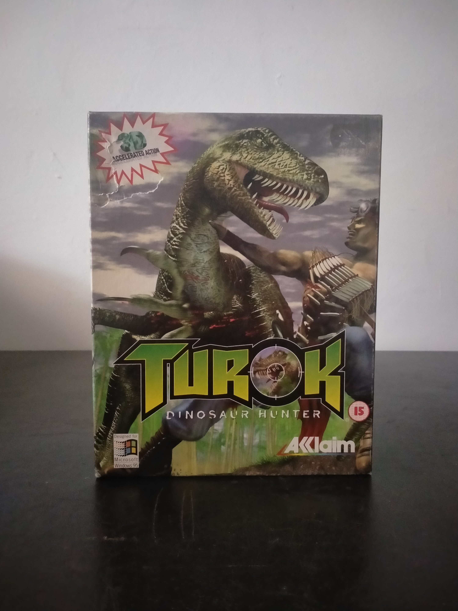

Ficha #000142
Turok: Dinosaur Hunter
Turok: Dinosaur Hunter es un shooter en primera persona publicado para PC en 1997 como adaptación del título aparecido originalmente en Nintendo 64. Basado en el personaje de cómic Turok, presenta una campaña ambientada en la Tierra Perdida, un entorno que mezcla selvas, ruinas, tecnología alienígena, guerreros y criaturas prehistóricas. El juego destaca por sus escenarios tridimensionales de gran amplitud, exploración con componentes de plataformas, enemigos con distintos patrones de comportamiento, zonas acuáticas y un arsenal de catorce armas que combina armamento convencional y tecnología fantástica. La versión para Windows 95 fue representativa de la primera generación de juegos para PC orientados al uso de aceleradoras gráficas 3D, promocionándose específicamente por su acción acelerada por hardware. Esta edición europea en caja grande conserva el lanzamiento físico de Acclaim con documentación multilingüe y soporte óptico en CD-ROM.
- Formato
- Big Box
- Plataforma
- Win95
- Género
- Shooter en primera persona Acción Ciencia ficción Aventura
- Serie
- Todos Big Box
- Desarrollador
- Iguana Entertainment
- Distribuidor
- Acclaim Entertainment
- EAN
- —
Contenido de la edición
- Caja de cartón Big Box
- CD-ROM en caja jewel case
- Manual de instrucciones
- Hoja de soporte técnico
Preservación
- Protección
- No determinado
- Formato recomendado
- BIN/CUE
- Jugable en virtualización
- Sí
Se recomienda crear una imagen completa del CD-ROM en formato BIN/CUE y conservar digitalizaciones del manual y de la documentación incluida. Para su ejecución puede utilizarse un entorno Windows 95 virtualizado con aceleración 3D compatible o soluciones modernas específicas para juegos gráficos de esta generación.